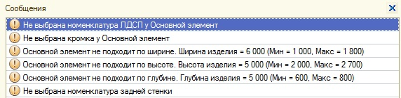

Справочная информация для работы с каталожными изделиями (Шкаф-купе).
Основная форма:
Общие размеры: Высота, Ширина, Глубина - это размеры всего Шкафа-купе вместе с боковыми элементами, размеры отдельных элементов рассчитываются внутри программы.
«Элемент» означает текущий выбранный вами элемент.
При выборе ЛДСП и Торцовки значения сохраняются и соответствуют другим элементам Шкафа-купе,
В случае с отдельно стоящим Шкафом-купе необходимо указать вид задней стенки и ее материал.
При наличии ящиков у одного из элементов, активизируются поля «Ручки» и «Дно (материал)». В некоторых случаях на картинке может отображаться ящик, но поля не активные. Это означает, что инженер при формировании каталога указал ящики иным способом.

Выбор изделия происходит следующим образом, при нажатии правой кнопки мыши по необходимому элементы появиться меню, как изображено на рисунке.
«Выбрать» - переход на форму выбора изделия по каталогу. Выбор уже отфильтрован, это значит, при выборе крыши у вас будет список доступных крыш.
«Очистить» - удаляет выбранный вами элемент.
Напоминаем : какой элемент в данный момент выбран у вас, можно увидеть в поле «Элемент».
В данном программном комплексе существует список несовместимых элементов. Поэтому при выборе очередного элемента список будет отфильтрован в соответствии с уже выбранными вами элементами.
Работа с дверью:

При нажатии на кнопку выбора

«Создать» - создает новую дверь с заданными параметрами высоты и ширины проема.
«Выбрать» - предоставляет список существующих дверей для выбора.
*рекомендация: создание двери лучше исполнять в заключительной стадии работы с каталогом, т.е. сперва определиться со всеми элементами Шкафа-купе и его размерами.
Основные ошибки каталога:

1. Не выбрана номенклатура у конкретного элемента, выбор в поле «ЛДСП»
2. Не выбрана кромка у конкретного элемента, выбор в поле «Торцовка»
3 – 5. Каждый элемент имеет свои максимальные и минимальные значения, если границы нарушены, мы получаем ошибку следующего типа – элемент
не подходит по …(ширина, высота, глубина) текущий размер (диапазон значений).
6. Не выбрана номенклатура у задней стенки, выбор в поле «Материал»

При сохранении возможно появление данного окна. Это означает что произошли изменения в размерах основного элемента, в следствии чего изменился
проем двери и текущая дверь не подходит по размерам.
«Редактировать» - откроется форма двери с уже измененными размерами и текстурами, вам необходимо просто подтвердить данную дверь (сохранить ее),
или добавить изменения и сохранить.